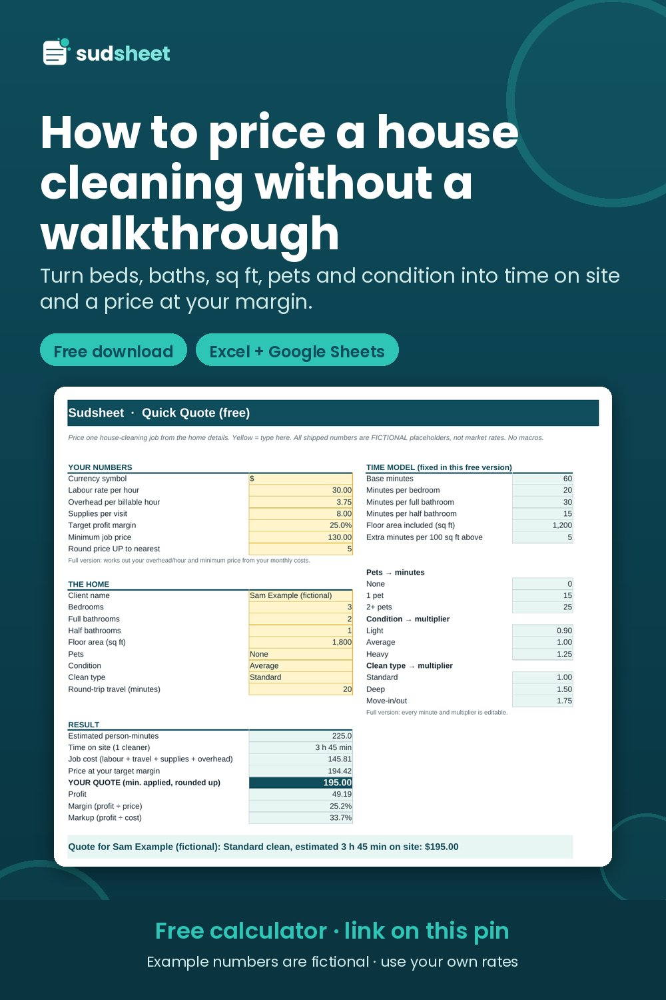

How to Price a House Cleaning Without a Walkthrough (Step by Step)

You get a text: "Hi! 3 bed, 2 bath, about 1,600 sq ft, two floors, one dog. How much for a clean, then every 2 weeks?"
You have two bad options and one good one. You can guess, which either scares the client off or locks you into a price that loses money for months. You can drive over for a walkthrough, which is an unpaid hour (or two, with the drive) before you've earned anything. Or you can price it from the details, with a method you can explain and defend.
This guide walks through that method. Every number below is a fictional worked example. Your rates, costs and local market will be different, so swap in your own.
Step 1: Ask the six questions that replace a walkthrough
Most of the time difference between homes comes from a handful of facts. Ask for these before you quote:
- Bedrooms
- Bathrooms, split into full and half
- Approximate square footage
- Number of floors
- Pets, and how many
- When it was last professionally cleaned. This is your best clue to condition.
Then ask about add-ons: inside the oven, inside the fridge, interior windows, laundry, baseboards. Each one becomes extra minutes.
Write the answers down. You'll put them in your quote later, and that's what makes quoting without a walkthrough safe (more on that in Step 6).
Step 2: Know what an hour actually costs you
Before you price any single job, you need one number: your true hourly cost. It is not the same as your pay rate.
Say you want to pay yourself $30 an hour. Your monthly business costs, like insurance, phone, software, marketing and replacing equipment, add up to $300. But you only clean about 80 paid hours a month. Driving, quoting and admin aren't billable.
So every billable hour has to carry $300 ÷ 80 = $3.75 of overhead. Your true hourly cost is $30 + $3.75 = $33.75, not $30.
If you want 25% of every price to be profit, and you lose about 3% to card fees, you need roughly $33.75 ÷ 0.72 = $46.88 for each hour of work. Any quote that works out below that means you're working for less than you planned.
You do this once, then update it when your costs change. (There's a full walkthrough in How to Calculate Your True Hourly Cost and Minimum Job Price.)
Step 3: Turn the home into minutes
Now build a simple time model. Here's a starting point. These are placeholders, not industry standards:
| Item | Minutes |
|---|---|
| Base (kitchen + living areas) | 60 |
| Per bedroom | 20 |
| Per full bathroom | 30 |
| Per half bathroom | 15 |
| Every 100 sq ft over 1,200 | 5 |
| Each extra floor | 10 |
| One pet | 15 |
For the example home (3 bed, 2 bath, 1,600 sq ft, 2 floors, 1 dog):
60 + (3 × 20) + (2 × 30) + 20 (for the extra 400 sq ft) + 10 (second floor) + 15 (dog) = 225 minutes for a standard clean.
The model gets better every time you use it. After each job, write down the minutes you estimated and the minutes it really took. After five or ten jobs you'll see where your numbers run high or low, and you can adjust them.
Step 4: Adjust for the first clean
The first visit is almost never a standard clean. The home hasn't been maintained to your standard yet, so it takes longer. In this example we use a ×1.35 first-clean multiplier and add 50 minutes for the oven and fridge:
225 × 1.35 + 50 ≈ 354 minutes, or about 5 h 54 min on site.
If the client said it hasn't been professionally cleaned in a year or more, consider a bigger multiplier or price it as a deep clean.
Step 5: Turn minutes into cost, then cost into price
Cost is labour + travel + supplies + overhead. For the first clean in this example that's about $223.23.
Now the step most people get wrong. To keep 25% of the price as profit, after a 3% card fee, divide the cost by 0.72:
$223.23 ÷ 0.72 = $310.05, rounded up to $315.
If you had just added 25% to your cost (a markup), you'd have quoted about $279, which is $31 less on one job. Markup and margin aren't the same thing. Here's a plain-English explanation.
For the recurring every-2-weeks visit the home is maintained, so it's a standard 225 minutes. Cost: $150.81. Price at a 25% margin: $209.46.
Watch what the recurring discount does
Many cleaners offer about 10% off for every-2-weeks clients. In this example that brings the visit to $190. But check the margin: it drops to 17.6%.
That isn't automatically wrong. It's a decision. You can keep the discount on purpose (a steady client is worth something), make it smaller, or set your own recurring price. What you shouldn't do is let a discount eat your profit without noticing.
Step 6: Put the assumptions in writing
Your quote should list what the price is based on: 3 bed, 2 bath, about 1,600 sq ft, 2 floors, 1 pet, oven and fridge on the first visit. Add one line to your terms:
"This price is based on the home details listed above. If the home is significantly different on the day, we'll agree any change before we start."
That one sentence is what makes quoting from details safe. If the "1,600 sq ft" home turns out to be 2,800, you have a fair, pre-agreed way to adjust.
The short version
- Ask six questions instead of doing a walkthrough.
- Know your true hourly cost.
- Turn the home into minutes with a model you keep improving.
- Price the first clean separately.
- Divide cost by (1 − margin − fees). Don't just add a percentage.
- Check what any discount does to your margin.
- Write down what the price is based on.
A free calculator that does this for you
If you'd rather not do this math on your phone, Sudsheet Quick Quote is a free spreadsheet (Excel and Google Sheets, no macros) that does Steps 3–5 for a single quote and gives you a one-line quote to paste into your reply:
👉 Get the free house cleaning quote calculator
Disclosure: Sudsheet makes this calculator and a paid version. All numbers here are a fictional example. This is a pricing aid, not financial or tax advice.
Free house cleaning quote calculator
Type in the home details and get time on site, your job cost and a price at your target margin, plus a one-line quote to paste into your reply. Excel + Google Sheets, no macros.